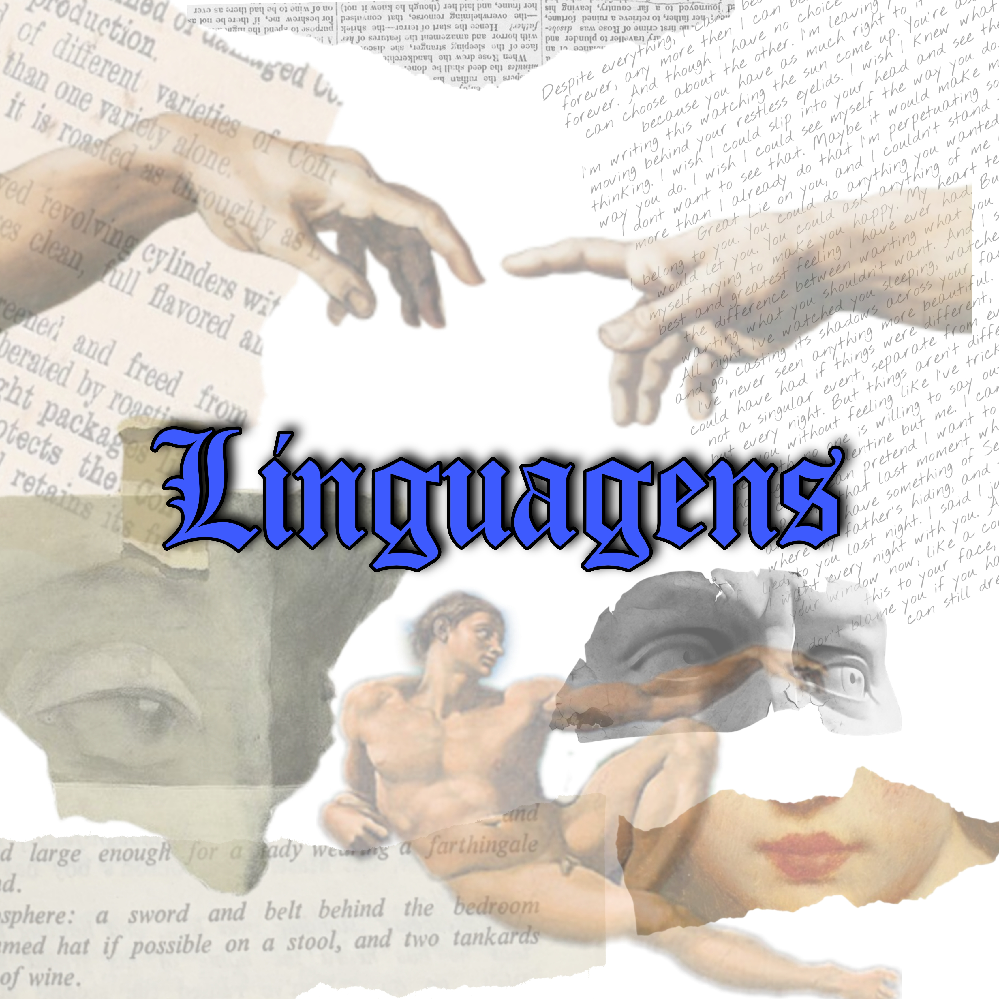
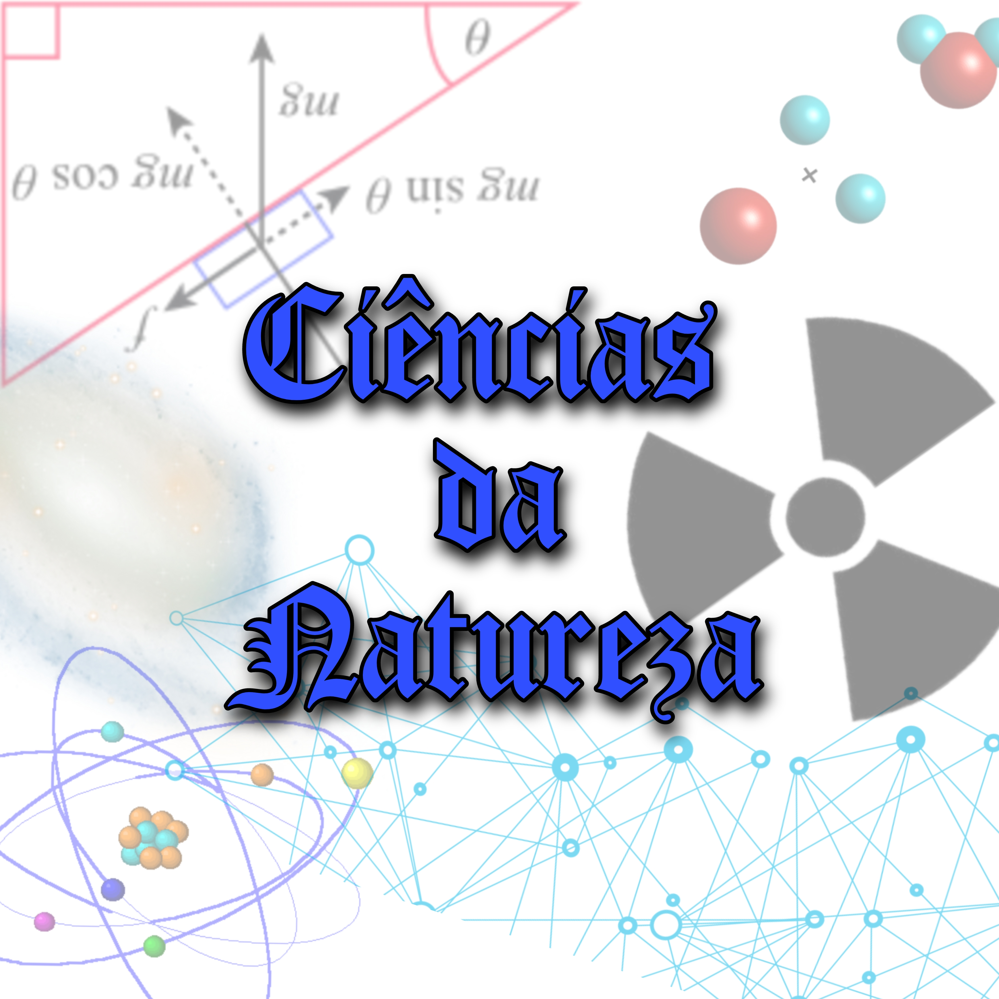

Nossos Conteúdos
O nosso site possuí uma variedade de conteúdos dentro da quatro principais áreas de conhecimento. Pensando em ajudar estudates que tiveram seus estudos afetados por conta da pandemia. Além de video aulas no
Disponibilização de pdf
Temos pdf's disponíveis para baixar, ao final de cada um de nossos artigos, basta clicar no link, aguardar alguns segundos, e pronto, a instalação será iniciada.
Áreas de conhecimento


Você pode clicar em qualquer uma das imagens acima, e será automáticamente direcionado para a aba de conteúdos de cada uma delas.